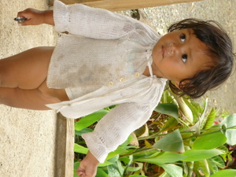

deisek 
/dɔʔisɔk/
adj.
“small”
1.
adj.
little (in size)
Wrd.Gloss: small; little
Deisek ka paa rin ne limang.
His foot on other side was small.
Eng. little; small; miniature; slight; tiny
Tag. maliít
Ceb. gamay; diyot
Ilo.: bássit
OCM: Weights and Measures (804)
Online dict status: -
Usage level: B
v.
for something (egdeisek, actor, eg><ø-) to decrease or decline
Eng. decrease; decline; diminish; reduce; get less; get smaller
Online dict status: -
Usage level: F
v.
for someone (egdereisek, migdereisek, indereisek, agent, eg><ø-rdpCV-) to divide into small pieces (egdereiseken, indereisek/migdereisek/pigdereisek, patient, eg><en-rdpCV-) as a share (igdereisek, theme, ig-rdpCV-)
Egdereisek sikandin te beyin ne behas su eyew egpakaatul.
She is dividing rice into small share so that it will be equal to everyone.
Egdereiseken ku pad ka beyin te tagsè sabeka su warè nakaatul.
I'm going to reduced again the share by everyone because un-equal.
Igdereisek ki rè te beyin su deisek ka impamehey ne behas.
We have only a little share of rice because of scarsity.
Eng. small pieces; pieces
Online dict status: -
Usage level: B
2.
adj.
few (in quantity)
Wrd.Gloss: few
Eng. few; paltry
Tag. kauntî
Ceb. gamay
Ilo.: bássit; sumagmamanó
Tigwanon: deʔisek
WBM: deʔisek
Ilianen: deʔisek
Cotabato Manobo: diʔisek
Tasaday: diʔisek
Sarangani: deʔitek
Obo: disek
Proto: deʔisek
OCM: Weights and Measures (804)
Online dict status: -
Usage level: B
3.
n.
(tindeisek, tin-) last finger
Naalatan a ganna su natempug ka tindeisek te alukuy ku.
I am very terrified earlier because the last finger of my friend was cut off.
Eng. last finger; little finger
Tag. hinliliít
Ceb. kumingking
Ilo.: kikít
OCM: Ethnoanatomy (826)
Idiom: deisek se bali
—cheap, unexpensive
OCM: Ethnoanatomy (826)
DDP: Finger, toe (2.1.3.3)
Online dict status: -
Usage level: R
adj.
(kinadeisekan, kina–an) least
Sikeddiey ka kinadeisekan te langun ne me suled ku.
I am the least in all of us.(brothers)
Eng. least
Online dict status: -
Usage level: R
v.
for a person, animal or thing (egpariisek, migpariisek, impariisek, agent, eg><ø-pA-) to make smaller i.e to shorten (egpariiseken, impareisek/migpareisek/pigpareisek, patient, egpA><en-) with something (igpariisek, impareisek, instrument, ig><ø-)
Egpariisek e pad te lawwa ku su amana ad e malambeg.
I'll make my body slim because i'm very fat.
Egpariiseken ku pad ka bali te beligyè din ne wey ad e egkuwa.
I'll wait that the price of his sales reduced before i order.
Seini se ilab ka igpariisek te subeng te wasey nu.
By making axe handle smaller, we will used this knife.
Eng. reduced; to make smaller; make smaller; smaller
Tag. paikliin
Ceb. pagamayun
Online dict status: -
Usage level: M
Updated by: RJH,AAA,TME,RJH,QDL,QDL,RJH,NJK,QDL,RJH
Last updated: 03/Sep/2013
"Deisek" in reader "Nekey-a ka deisek?"
"Deisek" in reader "Nekey-a ka deisek?"
"Deisek" in reader "Nekey-a ka deisek?"
"Deisek" in reader "Nekey-a ka deisek?"
"Deisek" in reader "Nekey-a ka deisek?"
"deisek" in text "Examples of Anit"
"deisek" in text "Examples of Anit"
"deisek" in text "Examples of Anit"
"deisek" in text "Cooking in Bamboo"
"deisek" in text "Where I Went to School"
"deisek" in text "Datu Gawilan Rebels against the Government"
"deisek" in text "Ke due masakit"
"Deisek" in text "Pegbebeli wey peg-isues te bali"
"deisek" in text "Pegbebeli wey peg-isues te bali"
"deisek" in healthbook "Nekey-a ka kahew?"
"dereisek" in healthbook "Nekey-a ka kahew?"
"dereisek" in healthbook "Migpamawian ni Inuk ka sumbaley rin ne migpangaliskis"
"dereisek" in healthbook "Migpamawian ni Inuk ka sumbaley rin ne migpangaliskis"
"deisek" in healthbook "Mania teg pakapatey kag iindes?"
"Deisek" in song "Himuwa nu ka meupiya"
"deisek" in song "Mateles ne ugpaan ku"
"deisek" in song "Innimu ni Hisus"
This page last updated: 28-Dec-2019
Copyright © 2009-2014, Matigsalug Language Christian Association, Inc